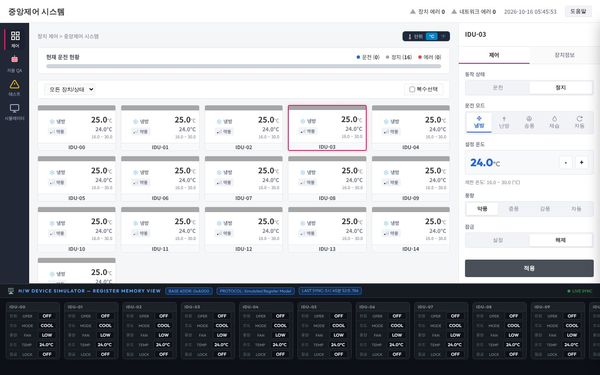

변경 요청마다 같은 일을 반복했습니다
중앙제어 시스템을 검증하면서, 요구사항이 하나 바뀔 때마다 아래 일을 반복했습니다.
- 영향 분석예: "냉방 최저 온도를 20°C로" → 어떤 화면·모드·기존 테스트가 영향을 받는지 찾기
- 테스트케이스(TC) 검토·작성기존 TC로 충분한지 보고, 경계값 같은 필요한 시험을 추가
- 시험과 원상 복구장비 상태를 바꿔 시험하고, 다음 시험을 위해 원래 상태로 되돌리기
- 보고실패가 제품 문제인지 시험 준비 문제인지 나눠 근거와 함께 정리
판단하는 시간보다 조작하고 기록하는 시간이 더 길었습니다. 또 같은 요구사항이라도 담당자마다 넣는 시험이 달랐습니다. 기준이 문서가 아니라 사람의 경험에 있었기 때문입니다.
시험 대상: 직접 만든 가상 중앙제어 시스템
회사 자료 대신, 실무와 비슷한 가상 제품을 만들어 시험했습니다. 장비 16대의 운전·모드·온도·풍량·잠금을 중앙에서 제어합니다.

분석 → TC 작성 → 시험 → 보고 → 사람 판단
에이전트 4개가 일을 나눠 맡고, 각 단계의 결과는 자동 검사를 통과해야 다음 단계로 넘어갑니다.
바뀌는 것과 모르는 것 구분
요청을 기존 요구사항과 대조해 바뀌는 조건과 유지할 조건을 나눕니다. 정해지지 않은 값은 추측하지 않고 질문으로 남깁니다.
기존 TC를 고르고, 부족한 시험만 작성
기존 TC로 확인할 수 있는 것은 재사용하고, 부족한 부분만 새 TC로 만듭니다.
TC대로 조작하고 원래대로 복구
TC를 화면 요소에 연결해 자동으로 시험하고, 끝나면 시험 전 상태로 되돌렸는지 확인합니다.
결과와 이유를 분류해 보고
제품 문제인지, 시험 준비 문제인지, 실행하지 못했는지 나눠 Slack·Notion으로 보고합니다.
모든 단계가 지키는 세 가지 원칙
근거 없는 기대값은 만들지 않음
모르는 값은 질문으로 남기고, 확인된 범위만 시험합니다.
실행 안 한 시험은 통과가 아님
자동화할 수 없는 시험은 제외하고 그 이유를 보고합니다.
자동 통과 ≠ 공식 등록
통과한 TC도 사람이 기존 TC와 비교한 뒤 등록합니다.
요청 하나로 따라가 보기
"냉방은 20°C 아래로 내려가지 않게 해 주세요.
난방은 기존 16°C 하한을 유지해 주세요."
| 시험 | 기대 | 실제 | 보고 |
|---|---|---|---|
| 냉방 20°C에서 내림 | 20°C 유지 | 19°C | 불일치제품 변경 전이라 예상된 결과 |
| 냉방 30°C 적용 | 30°C | 30°C | 통과 |
| 난방 17°C → 16°C | 16°C | 16°C | 통과 |
가장 어려웠던 점: AI에게 기준을 알려 주는 일
사람 QA에게는 "바뀐 범위의 하한과 상한을 확인하세요"면 충분합니다. AI에게는 무엇을, 몇 개, 어느 시점에 확인하라는 뜻인지까지 적어 줘야 했습니다.
"변경 후 하한과 상한을 확인한다"
사람에게는 충분하지만, AI는 한쪽 경계만 시험해도 지켰다고 판단했습니다.
- 새 하한과 새 상한이 각각 적용되는지 따로 확인
- 하한 바로 아래, 상한 바로 위가 막히는지 둘 다 확인
- 모드를 바꿀 때의 동작이 정해지지 않았으면 추측하지 말고 질문
- 화면·카드·내부값을 같은 시점에 확인
결과
대표 사례 세 가지
60초 영상 · 위 세 사례를 20초씩 보여 줍니다(2026년 8~9월 실행을 편집).
실무에 쓸 수 있을까?
반복 작업을 자동으로 연결하는 것과, 새로운 요청을 믿고 맡기는 것은 다른 문제였습니다.
| 업무 | 판단 | 이유 |
|---|---|---|
| 정해진 TC 실행과 원상 복구 | 쓸 수 있음 | 준비한 상황에서 100% 예상대로 처리, 복구도 확인 |
| 결과 분류와 보고서 작성 | 쓸 수 있음 | 제품 문제·시험 준비 문제·미실행을 규칙으로 구분. 결함 확정은 사람 |
| 새 요청의 TC 작성 | 초안 수준 | 기준을 규칙으로 정리해 둔 유형에서만. 그 전에는 필요한 시험이 빠짐 |
| 처음 보는 유형의 요청을 맡기기 | 아직 어려움 | 사람이 먼저 기준을 정리해야 하고, 반복 실행 시 일관성도 아직 측정 전 |
실제 도입에는 담당자의 기준을 규칙으로 정리하는 시간(가장 큰 비용), 제품마다 화면·내부값을 읽는 연결 작업, 사람의 검토 시간이 필요합니다. 실행 비용은 온도 요청 한 건 기준으로 AI 호출 16회, 사용량 기준 약 2달러로 추정했습니다(청구액 아님).
한계와 다음 단계
- 가상 제품에서만 확인했고 실제 장비는 미확인
- 같은 요청을 반복 실행했을 때의 일관성은 아직 측정 전
- 수작업 대비 시간이 얼마나 줄었는지 미측정
- 보완한 지침으로 같은 요청을 다시 실행해 누락이 줄었는지 확인
- 조건을 고정하고 같은 요청을 5회 반복
- 사람의 판단과 대조
더 자세히 보기 · 단계별 자동 검사와 원본 자료
| 단계 | 자동 검사가 확인하는 것 |
|---|---|
| 분석 후 | 요청 원문의 숫자·조건이 분석 결과와 같은지, 정해지지 않은 조건이 있는지 |
| TC 작성 후 | 요구사항에 없는 값이 들어갔는지, 준비·시험·복구 순서와 확인 시점이 맞는지 |
| 시험 전 | 자동화 계획이 TC와 같은지. 다르면 시험하지 않음 |
| 보고 전 | 집계 숫자와 분류 근거가 실제 실행 기록과 같은지 |